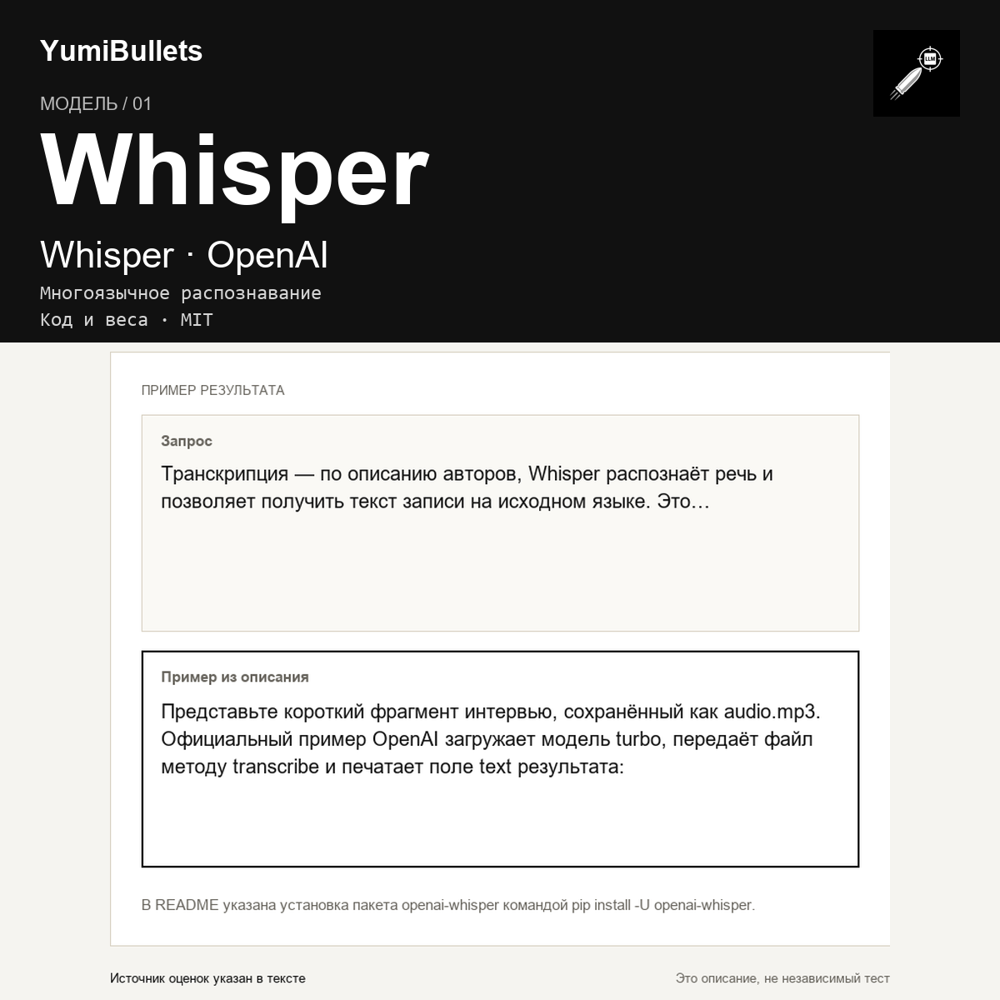

Whisper: речь в текст с проверкой по записи
После интервью или созвона нужен текст, в котором можно найти нужную мысль, а не переслушивать запись целиком. Whisper — модель распознавания речи от OpenAI. Авторы описывают многоязычную транскрипцию, перевод речи и определение языка. Ниже — первый запуск по их примеру и границы, которые важно учесть до использования результата.